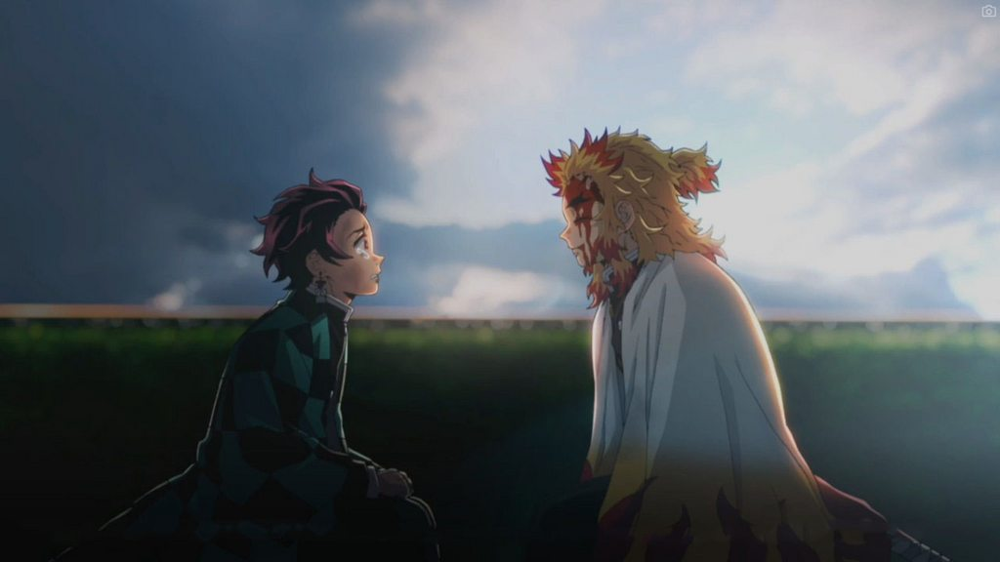

KIMETSU NO YAIBA: MUGEN RESSHA-HEN
Ver ‘Kimetsu No Yaiba: Mugen Ressha-hen Película Sub Español‘ Reseña Pelicula Titulado “El tren infinito”. En resumen este la película Tanjiro y el grupo terminan su entrenamiento de rehabilitación en la Mansión de las Mariposas, y acuden a su próxima misión en el Tren Mugen, donde más de 40 personas desaparecieron en muy poco tiempo.
Así que Tanjiro y Nezuko, junto con Zenitsu e Inosuke, se unen a uno de los espadachines más poderosos del Cuerpo de Cazadores de Demonios, Flame Hashira Kyojuro Rengoku, para enfrentarse al demonio a bordo del Tren Mugen rumbo a la desesperación.
Entonces ¿Quisieras ver más de Kimetsu No Yaiba: Mugen Ressha-hen Película (‘Demon Slayer Movie: Infinity Train, Kimetsu No Yaiba: Tren Infinito’ Película)? Continua leyendo.